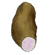
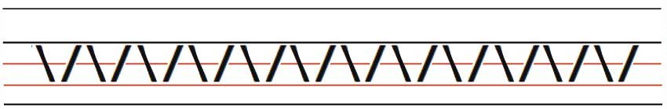
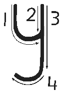

Lesson 23: Letter y
Lesson 23
Letter y

Draw, identify, or describe the pattern for the letter y; explore a teacher-provided raised-line version before answering.

Trace or finger spell the letter y; explore a teacher-provided raised-line letter model before answering.

Copy or finger spell the letter y using the writing lines, keyboard, or braille.